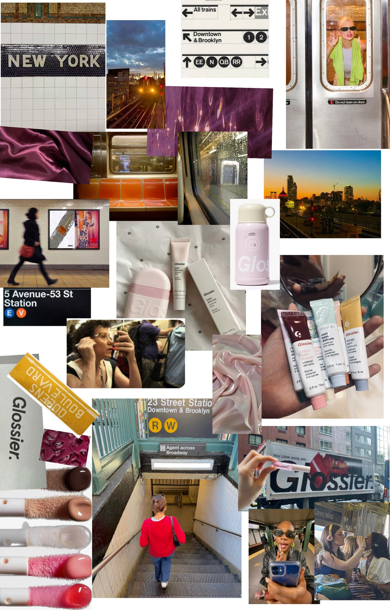

Glossier × NYC Subway
Balm Dotcom Five Boroughs Set
A limited edition of five tinted Balm Dotcoms, one for each borough, each coloured after the subway line that runs through it. The subway is where New York gets ready: the campaign takes the MTA's visual language (line bullets, Helvetica signs, white tile, the yellow platform edge) and softens it with Glossier pink and dewy, skin-first imagery.
- Client
- Glossier
- Product
- Balm Dotcom Five Boroughs Set (5 tints, limited)
- Market
- New York City
- Audience
- New Yorkers 18–34 who get ready on the train between home, work and class
- Idea
- Your commute is your vanity mirror.
- Tone
- Warm, witty, effortless. Glossier's “you” voice, said in MTA announcement style.
- Placements
- Car cards, platform posters, station takeovers, phone reels shot on the train
Moodboard
25 images in six themes: the subway, the product, people getting ready on the train, colour (plum and Balm Pink textures), typography (Vignelli signage, tile mosaics) and mood (golden hour on the elevated line, rain on the window).

Campaign palette
The five borough tints
Each tint takes its name and hue from a subway line. The line colour is used for the bullet; the softer tint is the actual balm.
Colour ratio per ad: 45% Balm Pink · 25% Tile White · 20% Sign Black · 7% Steel · 3% Platform Yellow. Each ad features one borough tint as its hero colour; never more than two tints in one ad.
Campaign fonts
Stand-in for MTA Helvetica. Headlines, station-sign bands, bullets. Sentence case, tight tracking.
Copy, captions, product details. Light at large sizes, Regular below 14 px.
The Glossier softness: tint names, one word of emphasis, pull quotes. Never for full headlines.
The G line
Glossier's G set as a subway bullet in Balm Pink: a new line on the map that only runs through your makeup bag. It pairs with the two names as a collab lockup, like Monster Eyewear + The Met.
Do
- Keep the bullet a perfect circle; clear space = half its width.
- Use Balm Pink or Sign Black bullets only (borough colours are for the tint bullets).
- Minimum size: 24 px on screen, 10 mm in print.
Don't
- Stretch, outline or add shadows to the bullet.
- Put the lockup on photos without a solid band behind it.
- Recolour the G in Platform Yellow (reads as an N/Q/R/W train).
Stand clear of the
glossy doors.
Balm Dotcom Five Boroughs Set. Limited edition, NYC only.